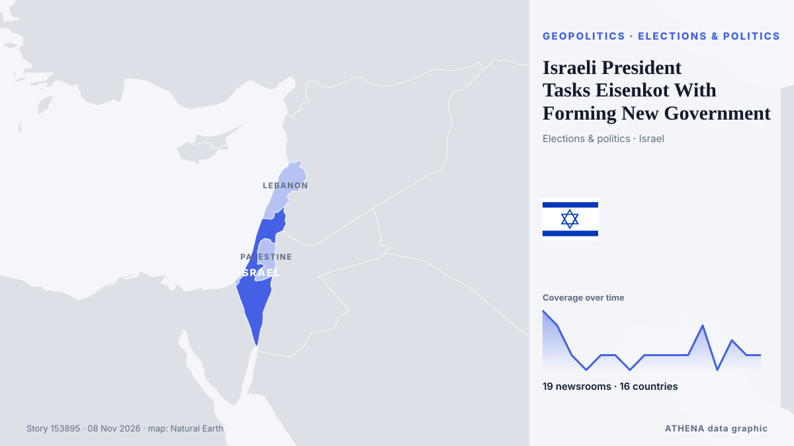

Israeli President Tasks Eisenkot With Forming New Government

Israeli President Isaac Herzog tasked Gadi Eisenkot with forming a new government after the Oct. de Kurdistan24 (English)
Relayé de façon indépendante par 19 médias dans 16 pays depuis le 7 nov. ; premier à l'annoncer : Haaretz (English) ; la couverture est à son pic. ATHENA juge le risque modéré (2.7/10), surtout en raison de la gravité des dommages décrits et de sa portée géographique et sectorielle. La confiance est de 93 % (élevée) : 19 médias indépendants le confirment, avec une fiabilité moyenne des sources de 76 %. Médias par pays : Azerbaïdjan (3), Israël (2), Turquie (2). Couverture : du 7 nov. au 8 nov., 15 heures.
Pourquoi c'est important: Les évolutions de sécurité et de diplomatie peuvent déplacer alliances, échanges et marchés bien au-delà des pays directement concernés.
Ce qui a changé : 21 nouveaux articles de 19 rédactions dans les 24 heures jusqu'au 8 nov..
Premier titre : Yashar's Eisenkot to receive mandate to form new government, president announces
Les titres sont affichés en anglais, tels que publiés.
En un coup d'œil
Sélectionné, noté et rédigé par la méthodologie publiée d'ATHENA. Aucun rédacteur n'intervient sur un événement en particulier. Comment il est produit ›
| 07 Nov 19:28 UTC | 4 |
|---|---|
| 07 Nov 20:28 UTC | 3 |
| 07 Nov 21:28 UTC | 1 |
| 07 Nov 22:28 UTC | 0 |
| 07 Nov 23:28 UTC | 1 |
| 08 Nov 00:28 UTC | 1 |
| 08 Nov 01:28 UTC | 0 |
| 08 Nov 02:28 UTC | 1 |
| 08 Nov 03:28 UTC | 1 |
| 08 Nov 04:28 UTC | 1 |
| 08 Nov 05:28 UTC | 1 |
| 08 Nov 06:28 UTC | 3 |
| 08 Nov 07:28 UTC | 0 |
| 08 Nov 08:28 UTC | 2 |
| 08 Nov 09:28 UTC | 1 |
| 08 Nov 10:28 UTC | 1 |
| 07 Nov 21:16 UTC | 0.0 |
|---|---|
| 07 Nov 23:11 UTC | 3.5 |
| 08 Nov 10:54 UTC | 2.7 |
Pourquoi ces chiffres
Importance
Risque
Confiance
La couverture : qui l'a annoncé, et quand
titre tel que publié · ouvre l'original- Haaretz (English) · IsraëlIsraeli president to task Gadi Eisenkot with forming governing coalition
- APA (English) · AzerbaïdjanIsrael's Eisenkot sets conditions for forming unity government
- Anadolu Agency (English) · TurquieIsrael's president says will task Eisenkot with forming next government
- DW English · AllemagneIsraeli president tasks Gadi Eisenkot with forming government
- Anadolu Agency (English) · TurquieIsrael’s Eisenkot calls for ‘national emergency gov't’ ahead of mandate
- Arab Times · KoweïtEisenkot Calls for ‘National Emergency Government’ as Netanyahu Faces Political Setback
- APA (English) · AzerbaïdjanIsraeli President announces he will task Eisenkot tomorrow with forming new government
- The Jerusalem Post · IsraëlYashar's Eisenkot to receive mandate to form new government, president announces
- Xinhua (English) — page reader · ChineIsraeli president to task Eisenkot with forming new gov't
- CGTN (World) · ChineHerzog taps Eisenkot to form next Israeli government
- Daily Mirror · Sri LankaIsrael’s president tasks opposition leader Eisenkot with forming government
- Mainichi (English) · JaponIsrael's president taps opposition candidate Eisenkot to form a government, in setback for Netanyahu
- Times of India · IndeIs Netanyahu's time up? 10 things to know as rival Eisenkot gets shot at power
- The Business Standard (Bangladesh) (working feed) · BangladeshCan Gadi Eisenkot break Israel's political deadlock?
- Nile Post · OugandaIsrael's president tasks opposition leader Eisenkot with forming government
- Kurdistan24 (English) · IrakIsraeli President Tasks Eisenkot With Forming New Government
- Asharq Al-Awsat (English) · Arabie saouditeIsrael President Taps Eisenkot to Form New Government
- The Korea Times · Corée du SudIsrael's president taps opposition candidate Eisenkot to form government, in setback for Netanyahu
- The Rio Times · BrésilIsrael Taps Eisenkot to Form a Government
- AzerNews · AzerbaïdjanIsraeli President Isaac Herzog gives Eisenkot first chance to form new government
- Naharnet · LibanWill Eisenkot withdraw Israeli army from south Lebanon?